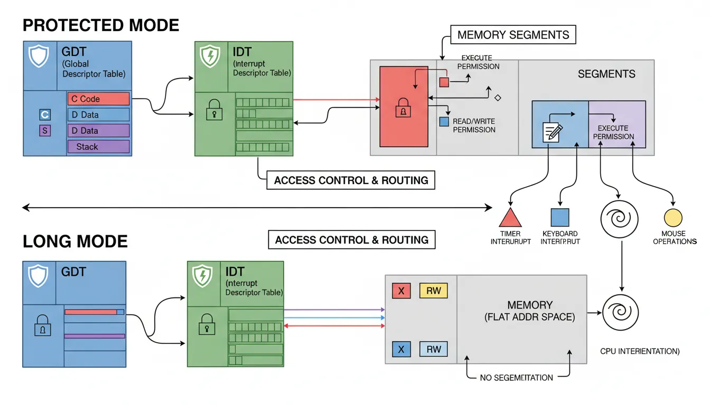
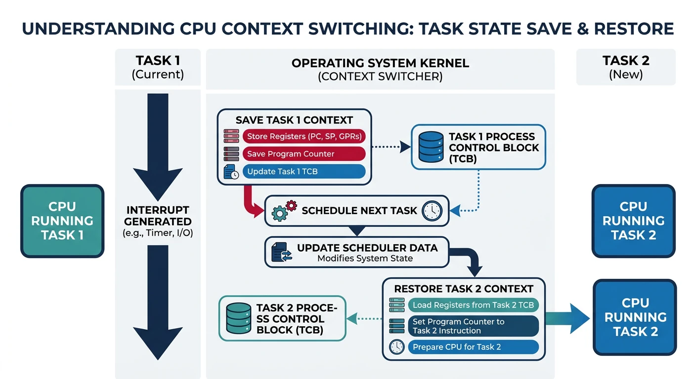
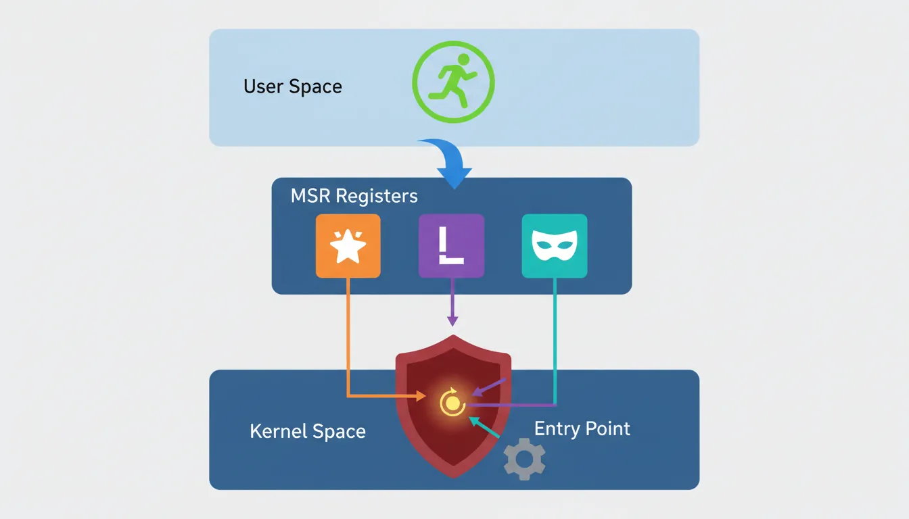
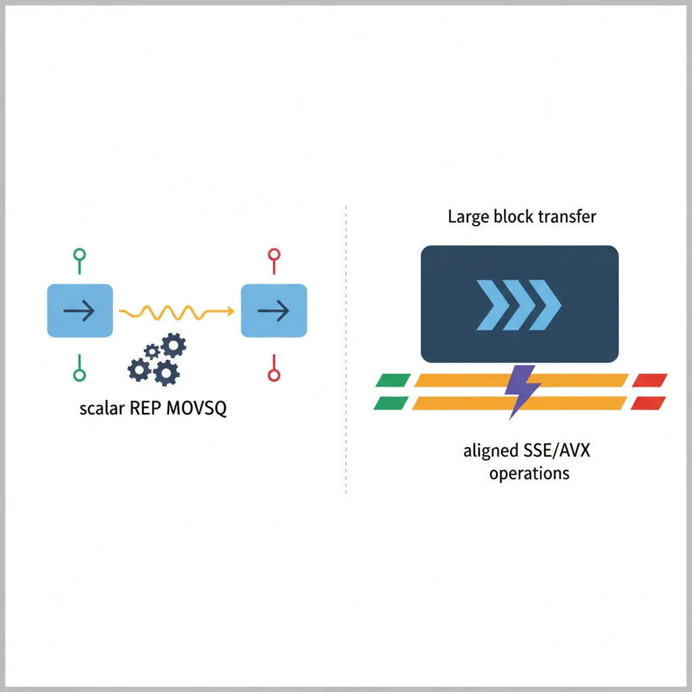
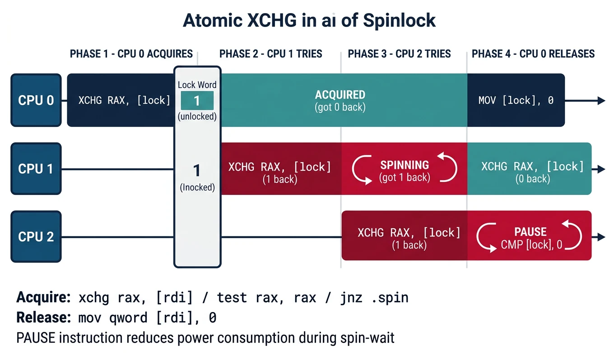

Multiboot Entry: Kernels following the Multiboot spec receive control in 32-bit protected mode with specific register values. The entry point must set up the long mode environment.
; Multiboot header
section .multiboot
align 4
dd 0x1BADB002 ; Magic
dd 0x00 ; Flags
dd -(0x1BADB002 + 0x00) ; Checksum
section .text
global _start
extern kernel_main
_start:
; EAX = magic, EBX = multiboot info
cli
; Set up stack
mov esp, stack_top
; Call C kernel
push ebx ; Multiboot info pointer
push eax ; Magic number
call kernel_main
; Halt if kernel returns
cli
.hang:
hlt
jmp .hang
section .bss
align 16
stack_bottom:
resb 16384 ; 16 KB stack
stack_top:
Save & Compile: kernel_entry.asm
Linux / macOS
nasm -f elf32 kernel_entry.asm -o kernel_entry.o
# Link with C kernel and linker script:
ld -m elf_i386 -T linker.ld kernel_entry.o kernel.o -o kernel.bin
Windows
nasm -f elf32 kernel_entry.asm -o kernel_entry.o
# Use cross-compiler (i686-elf-ld) for OS development on Windows
Multiboot kernel — requires a cross-compiler toolchain and linker script. Use qemu-system-i386 -kernel kernel.bin to test.
GDT & IDT Setup
The Global Descriptor Table (GDT) defines memory segments, while the Interrupt Descriptor Table (IDT) routes interrupts to handlers. Both are essential kernel structures.

Figure: GDT and IDT layout – memory segments define code/data access permissions and interrupt routing in protected and long mode.
64-bit GDT Structure
section .data
align 16
gdt64:
.null: dq 0 ; Null descriptor (required)
.code: dw 0xFFFF ; Limit 0:15
dw 0 ; Base 0:15
db 0 ; Base 16:23
db 10011010b ; Access: Present, Ring 0, Code, Exec, Read
db 10101111b ; Flags: Gran, Long mode, Limit 16:19
db 0 ; Base 24:31
.data: dw 0xFFFF
dw 0
db 0
db 10010010b ; Access: Present, Ring 0, Data, Write
db 10101111b
db 0
.user_code: ; Ring 3 code segment
dw 0xFFFF
dw 0
db 0
db 11111010b ; DPL=3, Code
db 10101111b
db 0
.user_data:
dw 0xFFFF
dw 0
db 0
db 11110010b ; DPL=3, Data
db 10101111b
db 0
.tss: ; Task State Segment descriptor
dw tss_size - 1 ; Limit
dw 0 ; Base will be filled at runtime
db 0
db 10001001b ; Present, 64-bit TSS
db 0
db 0
dq 0 ; High 32 bits of base (64-bit)
gdt64_ptr:
dw $ - gdt64 - 1 ; GDT size - 1
dq gdt64 ; GDT address
; Segment selectors (offset into GDT)
KERNEL_CODE equ 0x08 ; gdt64.code
KERNEL_DATA equ 0x10 ; gdt64.data
USER_CODE equ 0x1B ; gdt64.user_code | RPL 3
USER_DATA equ 0x23 ; gdt64.user_data | RPL 3
TSS_SEL equ 0x28 ; gdt64.tss
64-bit IDT Entry Structure
IDT Gate Descriptor (16 bytes in 64-bit mode):
┌───────────────┬───────────────┐
│ Offset 0:15 │ Selector │ Bytes 0-3
├───────────────┼───────────────┤
│ IST │ Type │ Offset 16:31 │ Bytes 4-7
├───────────────┴───────────────┤
│ Offset 32:63 │ Bytes 8-11
├───────────────────────────────┤
│ Reserved │ Bytes 12-15
└───────────────────────────────┘
Type field (byte 5):
Bit 7: Present (1=valid)
Bits 5-6: DPL (ring level to call from)
Bits 0-3: Type (0xE=64-bit interrupt, 0xF=64-bit trap)
; Common ISR stub - saves context and calls C handler
isr_common_stub:
; Push all general-purpose registers
push rax
push rbx
push rcx
push rdx
push rsi
push rdi
push rbp
push r8
push r9
push r10
push r11
push r12
push r13
push r14
push r15
; Call C interrupt handler
mov rdi, rsp ; Pass stack frame pointer
call interrupt_handler
; Restore registers
pop r15
pop r14
pop r13
pop r12
pop r11
pop r10
pop r9
pop r8
pop rbp
pop rdi
pop rsi
pop rdx
pop rcx
pop rbx
pop rax
add rsp, 16 ; Remove error code and ISR number
iretq ; Return from interrupt
Context Switching
Context switching saves one task's CPU state and restores another's. It's the mechanism that enables multitasking—like pausing a video, switching to a browser, then resuming exactly where you left off.

Figure: Context switch process – the kernel saves registers, stack pointer, instruction pointer, and CR3 for the current task before loading the next task's state.
Task State (what we save/restore):
┌────────────────────────────────┐
│ General Purpose Registers │ RAX-R15, RBP
├────────────────────────────────┤
│ Stack Pointer (RSP) │ Task's stack location
├────────────────────────────────┤
│ Instruction Pointer (RIP) │ Where to resume
├────────────────────────────────┤
│ RFLAGS │ CPU flags
├────────────────────────────────┤
│ CR3 │ Page table base (address space)
├────────────────────────────────┤
│ FPU/SSE State │ XMM0-XMM15 (optional)
└────────────────────────────────┘
Performance Tip: Modern kernels use lazy FPU switching—only save/restore XMM registers if the task actually used floating point. Track this with a flag and handle #NM (Device Not Available) exception.
Syscall Entry Point
The SYSCALL instruction provides fast user→kernel transitions without the overhead of interrupt gates. It's the modern way for applications to request kernel services.

Figure: SYSCALL fast entry – MSR registers (STAR, LSTAR, SFMASK) configure segment selectors and entry point for fast user-to-kernel transitions.
MSR Configuration
; Setup SYSCALL/SYSRET mechanism
; Must be done in kernel initialization
MSR_EFER equ 0xC0000080 ; Extended Feature Enable Register
MSR_STAR equ 0xC0000081 ; Segment selectors for SYSCALL/SYSRET
MSR_LSTAR equ 0xC0000082 ; RIP for SYSCALL (64-bit)
MSR_SFMASK equ 0xC0000084 ; RFLAGS mask for SYSCALL
setup_syscall:
; Enable SYSCALL/SYSRET in EFER
mov ecx, MSR_EFER
rdmsr
or eax, 1 ; Set SCE (Syscall Enable) bit
wrmsr
; STAR: Set segment selectors
; Bits 32-47: SYSCALL CS/SS (kernel segments)
; Bits 48-63: SYSRET CS/SS (user segments)
mov ecx, MSR_STAR
xor eax, eax
mov edx, (KERNEL_CODE) | ((USER_CODE - 16) << 16)
; Note: SYSRET loads CS from STAR[48:63]+16, SS from STAR[48:63]+8
wrmsr
; LSTAR: Entry point for SYSCALL
mov ecx, MSR_LSTAR
mov rax, syscall_entry
mov rdx, rax
shr rdx, 32
wrmsr
; SFMASK: Clear these flags on SYSCALL
mov ecx, MSR_SFMASK
mov eax, 0x200 ; Clear IF (disable interrupts)
xor edx, edx
wrmsr
ret
Syscall Handler
; Syscall entry point (RIP loaded from LSTAR MSR)
; On entry:
; RCX = user RIP (return address)
; R11 = user RFLAGS
; RAX = syscall number
; RDI, RSI, RDX, R10, R8, R9 = arguments
syscall_entry:
; CRITICAL: We're on user stack! Switch to kernel stack first.
swapgs ; Swap GS.base with KernelGSBase MSR
mov [gs:USER_RSP], rsp ; Save user RSP in per-CPU data
mov rsp, [gs:KERNEL_RSP] ; Load kernel stack
; Push user context for SYSRET
push rcx ; User RIP
push r11 ; User RFLAGS
push qword [gs:USER_RSP] ; User RSP
; Re-enable interrupts (cleared by SYSCALL)
sti
; Bounds check syscall number
cmp rax, SYSCALL_MAX
ja .invalid_syscall
; Call handler: syscall_table[rax](rdi, rsi, rdx, r10, r8, r9)
mov rcx, r10 ; Adjust: syscall uses R10 for arg4
call [syscall_table + rax * 8]
.return_to_user:
cli ; Disable interrupts for SYSRET
; Restore user context
pop rsp ; User RSP
pop r11 ; User RFLAGS
pop rcx ; User RIP
swapgs ; Restore user GS.base
sysretq ; Return to user mode
.invalid_syscall:
mov rax, -1 ; Return -EINVAL
jmp .return_to_user
section .data
syscall_table:
dq sys_read ; 0
dq sys_write ; 1
dq sys_open ; 2
; ... more syscall handlers ...
SYSCALL_MAX equ ($ - syscall_table) / 8 - 1
Security Critical: Always switch to kernel stack before doing anything else! User code controls RSP—operating on user stack is a privilege escalation vulnerability.
Memory Operations
Hand-optimized memory operations are kernel essentials. These functions are called millions of times—every cycle counts.

Figure: Kernel memcpy strategies – scalar REP MOVSQ handles small copies while aligned SSE/AVX operations accelerate large block transfers.
memcpy - Fast Memory Copy
; void* memcpy(void* dest, const void* src, size_t n)
; RDI = dest, RSI = src, RDX = count
; Returns: original dest in RAX
global memcpy
memcpy:
mov rax, rdi ; Return value = dest
mov rcx, rdx ; Count
; Copy 8 bytes at a time
shr rcx, 3 ; RCX = count / 8
rep movsq ; Copy qwords
; Copy remaining bytes (0-7)
mov rcx, rdx
and rcx, 7 ; RCX = count % 8
rep movsb ; Copy remaining bytes
ret
; SIMD-optimized memcpy for large blocks
memcpy_simd:
mov rax, rdi
cmp rdx, 128
jb memcpy ; Fall back for small copies
; Align destination to 16 bytes
.align_loop:
test rdi, 15
jz .aligned
movsb
dec rdx
jmp .align_loop
.aligned:
mov rcx, rdx
shr rcx, 7 ; 128 bytes per iteration
.simd_loop:
movdqa xmm0, [rsi]
movdqa xmm1, [rsi + 16]
movdqa xmm2, [rsi + 32]
movdqa xmm3, [rsi + 48]
movdqa xmm4, [rsi + 64]
movdqa xmm5, [rsi + 80]
movdqa xmm6, [rsi + 96]
movdqa xmm7, [rsi + 112]
movdqa [rdi], xmm0
movdqa [rdi + 16], xmm1
movdqa [rdi + 32], xmm2
movdqa [rdi + 48], xmm3
movdqa [rdi + 64], xmm4
movdqa [rdi + 80], xmm5
movdqa [rdi + 96], xmm6
movdqa [rdi + 112], xmm7
add rsi, 128
add rdi, 128
dec rcx
jnz .simd_loop
; Handle remainder
and rdx, 127
mov rcx, rdx
rep movsb
ret
memset - Fill Memory
; void* memset(void* dest, int c, size_t n)
; RDI = dest, RSI = value (byte), RDX = count
; Returns: original dest in RAX
global memset
memset:
mov rax, rdi ; Save dest for return
mov r8, rdi ; Backup dest
; Broadcast byte to all 8 bytes of RAX
movzx eax, sil ; AL = byte value
mov ah, al ; AX = byte repeated
mov rcx, rax
shl rcx, 16
or rax, rcx ; EAX = byte * 4
mov rcx, rax
shl rcx, 32
or rax, rcx ; RAX = byte * 8
; Fill 8 bytes at a time
mov rcx, rdx
shr rcx, 3
rep stosq
; Fill remaining bytes
mov rcx, rdx
and rcx, 7
rep stosb
mov rax, r8 ; Return original dest
ret
memcmp - Compare Memory
; int memcmp(const void* s1, const void* s2, size_t n)
; Returns: 0 if equal, <0 if s10 if s1>s2
global memcmp
memcmp:
xor eax, eax
test rdx, rdx
jz .done ; n=0, return 0
mov rcx, rdx
repe cmpsb ; Compare until mismatch or done
je .done ; All equal
; Found difference at [rsi-1] vs [rdi-1]
movzx eax, byte [rdi - 1]
movzx ecx, byte [rsi - 1]
sub eax, ecx
.done:
ret
Spinlocks & Atomics
In a multi-core system, spinlocks protect shared data from concurrent access. A spinlock "spins" (busy-waits) until it can acquire exclusive access—like waiting at a single-person bathroom door.

Figure: Spinlock with XCHG – cores atomically swap 1 into the lock word; only the core that reads 0 (unlocked) acquires the lock.
The LOCK Prefix
LOCK Prefix: Makes the following instruction atomic (indivisible). The CPU locks the memory bus during the operation, preventing other cores from interfering.
; Atomic operations with LOCK prefix
lock inc qword [counter] ; Atomic increment
lock dec qword [counter] ; Atomic decrement
lock add qword [val], 10 ; Atomic add
lock xadd [val], rax ; Atomic exchange-add (returns old value)
lock cmpxchg [ptr], rbx ; Compare-and-swap (if [ptr]==rax, [ptr]=rbx)
lock bts [bitmap], rax ; Atomic bit test and set
Simple Spinlock Implementation
; Spinlock structure: 0 = unlocked, 1 = locked
section .data
my_lock dq 0
section .text
; void spin_lock(uint64_t* lock)
; RDI = pointer to lock
global spin_lock
spin_lock:
mov rax, 1
.try_acquire:
xchg rax, [rdi] ; Atomically swap 1 with lock
test rax, rax ; Was it 0 (unlocked)?
jnz .spin ; No → someone else holds it
ret ; Yes → we acquired the lock!
.spin:
pause ; CPU hint: we're spinning (saves power)
cmp qword [rdi], 0 ; Check without LOCK (read is atomic)
jne .spin ; Still locked, keep spinning
jmp .try_acquire ; Looks free, try to acquire
; void spin_unlock(uint64_t* lock)
; RDI = pointer to lock
global spin_unlock
spin_unlock:
mov qword [rdi], 0 ; Release lock (simple store is atomic)
ret
Ticket Spinlock (Fair)
Simple spinlocks can starve some CPUs. Ticket locks ensure first-come-first-served ordering:
; Ticket lock: 2x 32-bit counters
; Low 32 bits: "now serving" (head)
; High 32 bits: "take a number" (tail)
section .data
ticket_lock: dq 0 ; head=0, tail=0
section .text
; void ticket_lock_acquire(uint64_t* lock)
global ticket_lock_acquire
ticket_lock_acquire:
mov eax, 1
lock xadd [rdi + 4], eax ; Atomically get ticket (tail++)
; EAX = our ticket number
.wait:
cmp [rdi], eax ; Is it our turn? (head == ticket)
je .acquired
pause
jmp .wait
.acquired:
ret
; void ticket_lock_release(uint64_t* lock)
global ticket_lock_release
ticket_lock_release:
lock inc dword [rdi] ; head++ (next customer)
ret
Exercise
Implement atomic_compare_exchange
Write a function that atomically compares *ptr with expected and, if equal, stores desired. Return 1 if swap succeeded, 0 if not.
// C signature:
int atomic_cas(uint64_t* ptr, uint64_t expected, uint64_t desired);
// RDI = ptr, RSI = expected, RDX = desired
Hint: Use lock cmpxchg. It compares RAX with memory and swaps if equal.